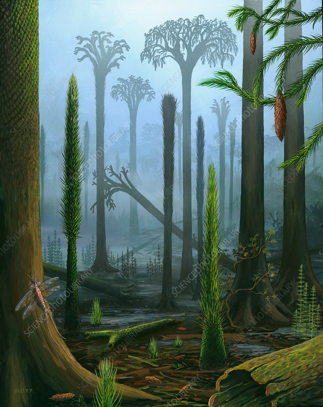
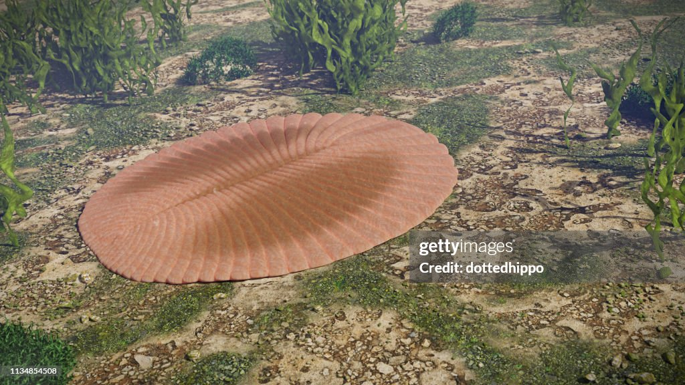
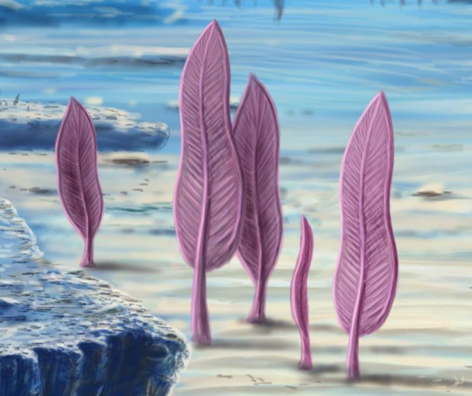
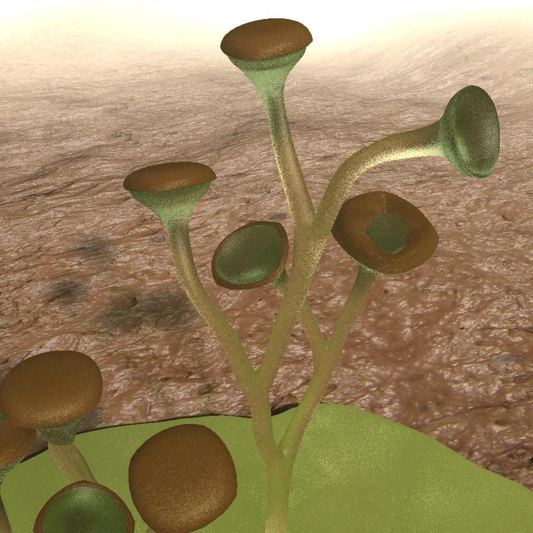
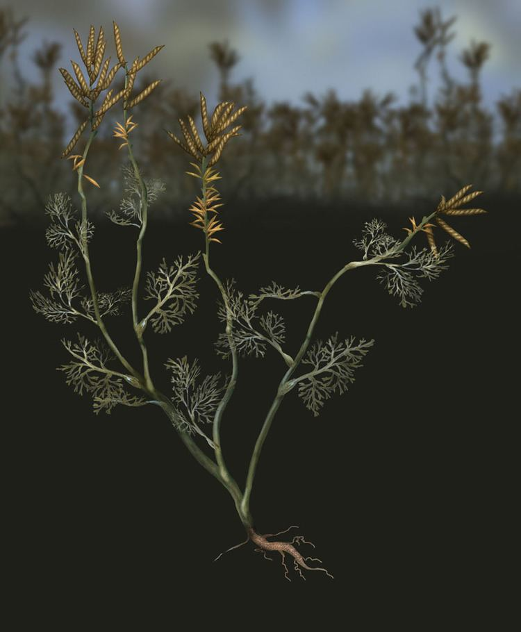
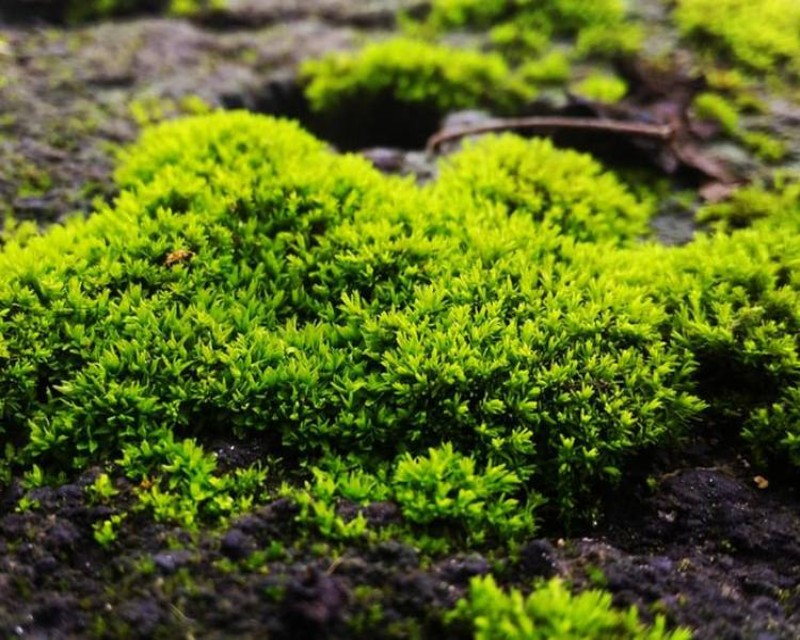
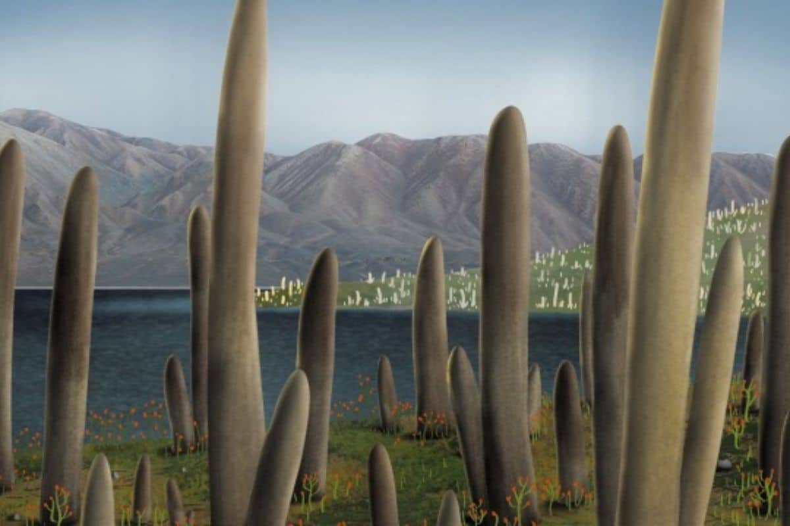
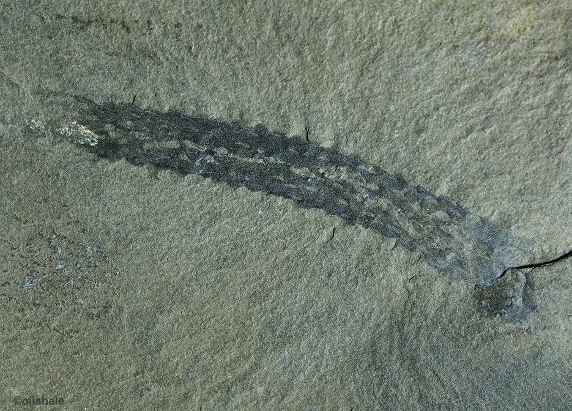
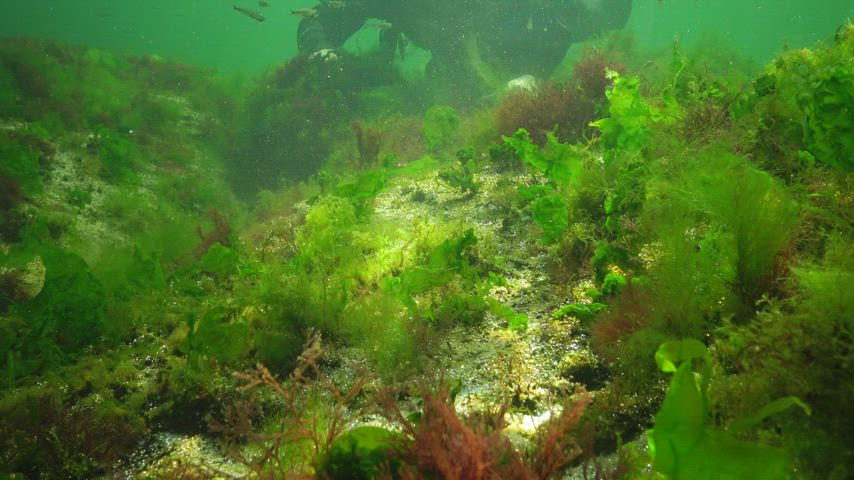
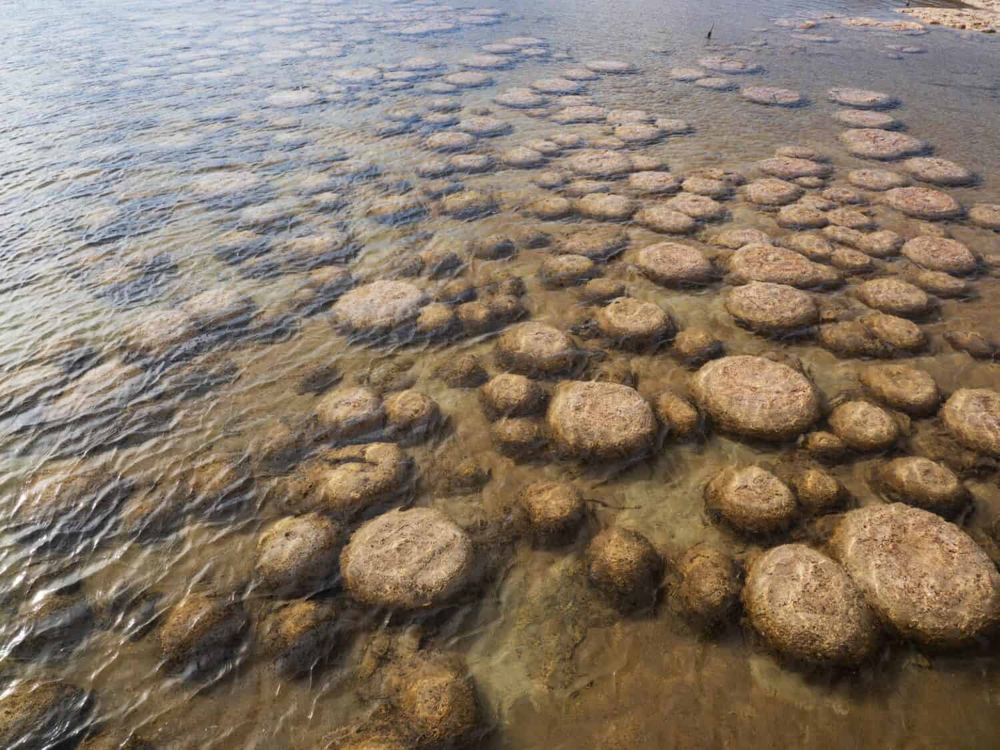

PALEO BOTANY: THE ROOTS OF TIME
Menjelajahi evolusi oksigen dan kehidupan melalui jejak karbon tumbuhan purba yang membentuk dunia.
REVOLUSI HIJAU ZAMAN KARBON
Hutan purba bukan hanya sekadar pemandangan, melainkan mesin biologis raksasa. Pada periode Karbon, konsentrasi oksigen melonjak hingga **35%** (dibandingkan 21% saat ini) berkat dominasi pohon raksasa seperti *Lepidodendron*.
Data Evolusi Flora:
- Tinggi Maksimal: Lepidodendron bisa mencapai 30-40 meter dalam waktu singkat.
- Dampak Geologis: Menumpuk sisa organik yang kini menjadi cadangan batu bara terbesar dunia.
- Sistem Reproduksi: Dominasi spora sebelum evolusi biji dan bunga mengambil alih.

Ilustrasi Hutan Rawa Karbon yang rimbun.

[SKELETON]: Fosil daun paku purba dengan detail sempurna.

Dickinsonia
Organisme pipih beruas dari Ediacaran. Bukti awal transisi menuju kehidupan hewan.

Charnia
Makhluk laut mirip daun paku. Hidup di dasar laut dalam tanpa cahaya matahari.

Cooksonia
Pionir tumbuhan darat bervaskular pertama yang memiliki struktur batang sederhana.

Archaefructus
Salah satu fosil tumbuhan berbunga tertua yang pernah ditemukan di dunia.
ARCHAEFRUCTUS: THE FIRST BLOOM
Ditemukan di Formasi Yixian, Tiongkok, Archaefructus adalah salah satu genus tumbuhan berbunga (Angiospermae) tertua yang diketahui. Ia hidup sekitar 125 juta tahun lalu di lingkungan perairan dangkal, membuktikan bahwa revolusi bunga dimulai dari tepi air.
🌿 CYCAS (Cycadophyta)
Sering disebut sebagai "Pakis Haji", kelompok ini adalah penyintas dari Era Mesozoikum yang pernah menjadi makanan utama dinosaurus herbivora.
- Era Kejayaan: Periode Jura (The Age of Cycads).
- Ketahanan: Mampu hidup di tanah miskin hara berkat simbiosis dengan sianobakteri.
- Ciri Khas: Memiliki runjung (cone) raksasa sebagai organ reproduksi primitif.
🍂 GINKGO (Ginkgophyta)
Satu-satunya spesies yang tersisa dari divisinya. Ginkgo adalah contoh sempurna dari stasis evolusi yang tidak berubah selama jutaan tahun.
- Usia Fosil: Kerabat dekatnya sudah ada sejak 270 juta tahun lalu (Periode Permian).
- Keunikan: Memiliki daun berbentuk kipas yang tidak ditemukan pada tumbuhan lain.
- Daya Tahan: Dikenal sangat tahan terhadap polusi, penyakit, dan bahkan radiasi nuklir.
🌿 Bryophyte Pioneer
Pondasi Oksigen di Era Ordovisium (470 Juta Tahun Lalu)

Ilustrasi Mikroskopis Koloni Bryophyte Purba.
🌱 Penakluk Daratan Pertama
Berasal dari alga hijau bersel tunggal, nenek moyang lumut (Bryophytes) bermigrasi dari air ke daratan pada periode Ordovisium. Mereka menghancurkan batu menjadi tanah.
🔬 Data Archive
- Klasifikasi: Non-Vaskular (Tanpa Pembuluh).
- Adaptasi: Kutikula lilin sederhana.
- Dampak Global: Penurunan drastis CO2 global.
- Peran: Jalan bagi tumbuhan tingkat tinggi.
STATUS UPDATE 8.0: BRYOPHYTE VISUAL & DATA SYNCHRONIZED.
(Timestamp: Paleo-Eon | Source: Mega Lab Archive | Priority: Critical)

🍄 PROTOTAXITES
Sebelum pohon raksasa merajai langit, daratan dikuasai oleh jamur menara ini. Berdiri tegak hingga 8 meter di dunia yang masih didominasi tumbuhan non-vaskular gersang.
"Mushroom-like Spire Fungus"
🌲 LEPIDODENDRON
Pelindung hutan purba yang megah, kerabat lumut gada (club moss) purba yang tumbuh setinggi 50 meter. Kulit batangnya memiliki pola "sisik naga" yang unik.
"Pioneer Dragon-Scaled Tree"

🤝 MYCORRHIZAE
Kunci penaklukan daratan yang sesungguhnya. Simbiosis sakral antara jamur purba dan akar tumbuhan pertama untuk berbagi air dan nutrisi di lingkungan yang miskin hara.
"Symbiotic Fungal Connection"
🌊 Cambrian Marine Archive
Eksplorasi Pionir Hijau di Bawah Kedalaman Burgess Shale (541 Juta Tahun Lalu)
> Geser ke samping untuk navigasi >

MARGARETIA
Ganggang hijau purba berbentuk tabung berpori dari Burgess Shale, tumbuh tegak di dasar samudra.

DALYIA
Menampilkan percabangan kompleks dan simetris, Dalyia adalah alga Cambrian dengan estetika "pohon" purba.

MARPOLIA
Ganggang "berbulu" yang tumbuh dalam rumpun lebat, berfungsi sebagai habitat bagi trilobita kecil purba.

STROMATOLIT
Struktur batu berlapis hasil koloni sianobakteri purba, sang pembuat oksigen terbesar di laut Cambrian.
> SYSTEM_LOG_LENGKAP
Botany Archive: Berhasil menambahkan data ilustrasi Prototaxites, Lepidodendron, dan Mycorrhizae dalam mode Transparansi Penuh.
Anomali Waktu Terdeteksi: Penyatuan energi Ohma Zi-O dan kehadiran dua entitas Blade (Kenzaki & Kendate) di tahun 10.000 SM.
Sistem Card Scrolling Horizontal diaktifkan untuk kategori Ediacara & Early Plants.
Emerald Nexus v8.0 Berhasil dimanifestasikan oleh Raja Anwarhu.